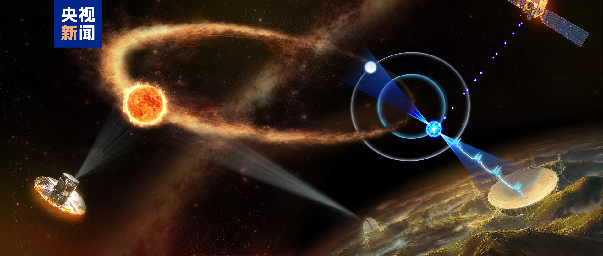
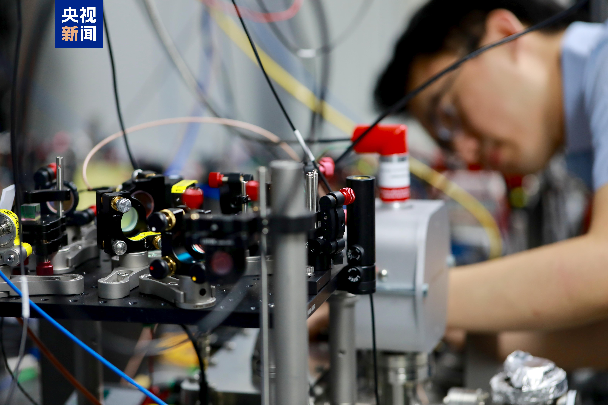
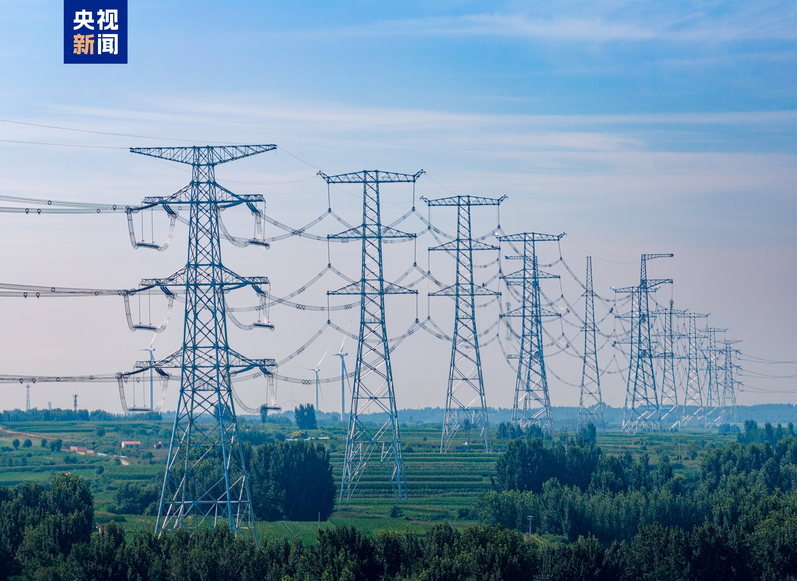
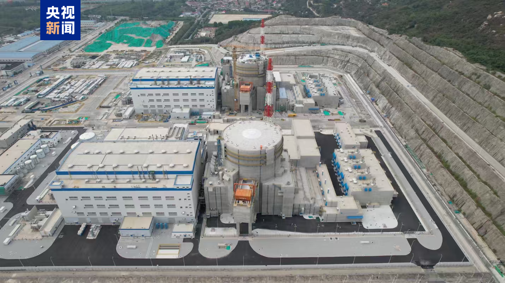
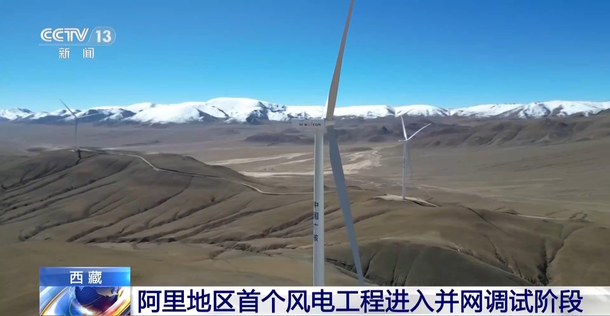

“中国天眼”发现首例原生演化脉冲星三体系统
依托“中国天眼”FAST的优越探测性能，近期，国家天文台韩金林研究员等科研人员，结合FAST射电观测数据与国际上光学和伽马射线望远镜的多波段天文数据，揭示了FAST发现的脉冲星J0435+3233属于首例尚在演化阶段的原生三体系统，这也是第二例被确认的脉冲星三体系统。相关研究成果10月9日在国际学术期刊《天体物理学杂志快报》发表。

该原生演化三体系统具备清晰且显著的三体引力交互效应，是验证强等效原理等基础引力理论的优质天然观测平台，为人类深入剖析三星系统的复杂演化机制、探索极端环境下的天体物理规律，提供了极具科研价值的珍贵样本。
量子精密测量实现新突破 我国科研团队研制出“核光钟”日前，清华大学联合国内多个研究团队，在国际上率先研制出“核光钟”，实现了量子精密测量由电子跃迁迈向原子核跃迁，为新一代高性能时间频率基准、深空探测和基础物理研究等开辟新的技术路径。

“核光钟”被视为继原子微波钟和原子光钟之后的新一代时间频率标准，是当前量子精密测量领域前沿攻关方向。
据介绍，“核光钟”未来有望应用于导航和深空探测等领域，对卫星、航天器进行更加精准的定位和距离测量，服务国家重大需求。
10月10日，山东胶东半岛清洁能源送出的关键通道——烟威1000千伏特高压工程正式竣工投产，这也是我国“十五五”时期投运的首个特高压交流输变电工程。

烟威特高压工程线路全长1197公里，作为全国首个服务核电送出的特高压工程，投运后烟台海阳、莱阳等地的核电将通过该通道送往全省。 田湾核电7号机组完成首次并网发电 单机年发电量近百亿千瓦时 10月8日，田湾核电7号机组完成首次并网发电，单机年发电量近百亿千瓦时，预计在本年内投入商业运行。机组全部投产以后，田湾基地总装机容量将突破900万千瓦，年发电量超700亿千瓦时，每年可以减少二氧化碳排放5740万吨。

西藏阿里地区首个风电工程进入并网调试阶段
近日，西藏阿里地区首个风电工程——中广核阿里改则5万千瓦风电项目完成全部风机吊装，全面进入并网调试阶段，计划于2026年底并网运行。

该项目位于海拔4600米至4800米的阿里雪域高原，共建设10台单机容量5兆瓦的风电机组。项目全容量投运后，年发电量可达1.8亿千瓦时，等效减排二氧化碳约15万吨。